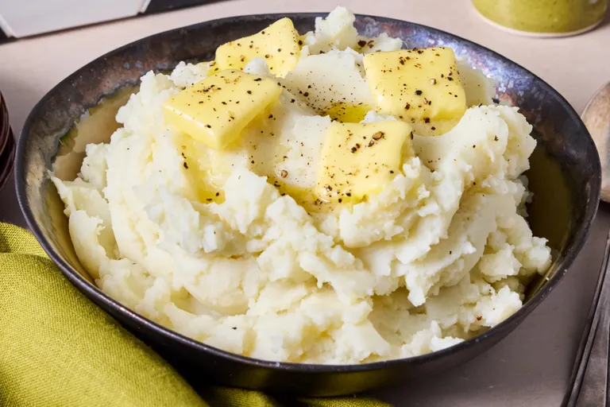

Home
Mashed Potato

Description
A classic side dish made by boiling or steaming potatoes and mashing them with butter, milk or cream, salt, and black pepper. It is typically served alongside roasted meats, fried chicken, or vegetables, often topped with gravy.
Ingredients
- 2 pounds russet potatoes, peeled and cut into 2-inch chunks
- 3 cloves garlic, peeled, or to taste (Optional)
- 1 cup milk
- 2 tablespoons butter
- salt and ground black pepper to taste
Steps
- Gather all ingredients.
- Bring a large pot of salted water to a boil. Add potatoes and garlic, if using: reduce the heat to medium and simmer until potatoes are easily pierced with a fork, about 15 minutes.
- When the potatoes are almost finished, heat milk and butter in a small saucepan over low heat until butter is melted.
- Drain potatoes and garlic well; return to the hot pot for 1 to 2 minutes to remove excess moisture. Gradually add the warm milk mixture while mashing until smooth and creamy, using only as much as needed to reach your desired consistency.
- Season with salt and pepper. Serve topped with extra butter, if desired.